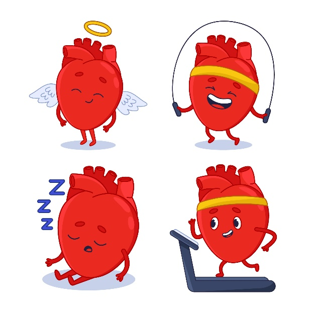
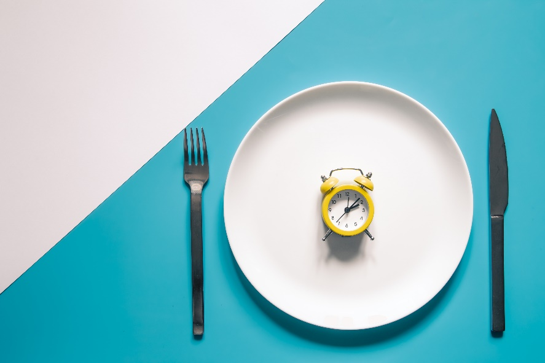
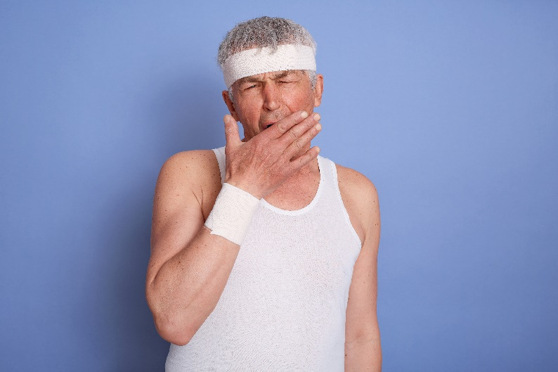
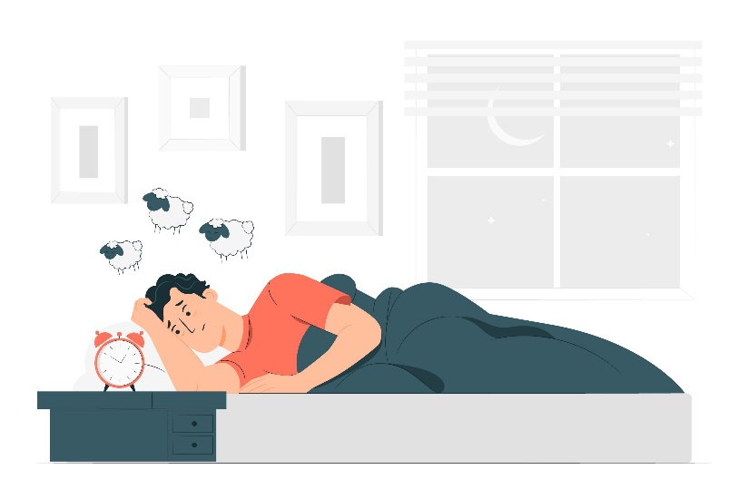
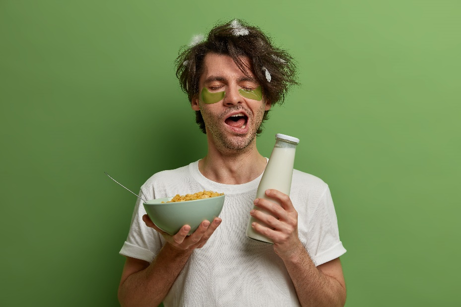

تاثیر خواب بر تناسب اندام
مقدمه
در حالی که بسیاری از مردم از تاثیر خواب بر سلامتی کلی بدن آگاه هستند، برخی از مردم تاثیر خواب بر تغییرات وزن را احساس کرده اند. در صورتی که بدن شما زمان کافی برای استراحت و تامین انرژی نداشته باشد نمی تواند به خوبی به فعالیت خود ادامه دهد. خواب فرصتی ایجاد می کند تا بدن استراحت کند و حتی کالری بسوزاند. افرادی که به خوبی استراحت کرده اند پس از بیدار شدن فعال تر بوده و انرژی بیشتری دارند که همین امر منجر می شود در طول روز کالری بیشتری را بسوزانند. مغزی که نتوانسته است به اندازه کافی استراحت کند، توانایی کمتری برای کنترل خود در برابر غذاهای پرکالری خواهد داشت در حالی که مغز متمرکز و استراحت کرده می تواند در برابر این غذاها مقاومت کند.
تاثیر خواب بر وزن
مطالعات بسیاری در ارتباط با تاثیر خواب بر تغییرات وزنی انجام شده است. یکی از این تحقیقات در ارتباط با تاثیر میزان خواب بر حفظ سلامت بدن بوده و تحقیق دیگری نیز در ارتباط با تاثیر کم خوابی بر افزایش شاخص جرم بدن یا BMI انجام شده است. همچنین تحقیقاتی نشان داده اند که کمبود خواب باعث می شود هورمون هایی در بدن تولید شود که بر رژیم غذایی تاثیر مستقیم دارند. با افزایش سطح گرلین (که به هورمون گرسنگی معروف است) که یکی از همین هورمون ها می باشد، اشتهای شما افزایش خواهد یافت. متخصصین خواب با بررسی های بیشتر به تاثیر کم خوابی بر تغییرات دو هورمون دیگر پی بردند. افزایش سطح کورتیسول (که موجب استرس می شود) و کاهش سطح لپتین (که به شما پیغام عدم نیاز به صرف غذای بیشتر را می دهد) موجب صرف بیش از حد غذا خواهد شد. متخصصین پی بردند که با داشتن خواب کافی شبانه، بدن شما ترکیب سالم تری از هورمون ها را تولید می کند که همین امر شما را از پرخوری و مصرف غذاهای ناسالم باز خواهد داشت.
خواب کمتر منجر به کاهش وزن نمی شود.
با خواب کمتر وزن شما کمتر نخواهد شد. وقتی شما کم بخوابید، بدن شما کالری را با سرعت کمتری می سوزاند تا انرژی را ذخیره کند. همچنین گرسنه تر از خواب برمی خیزید که همین امر منجر به ذخیره بیشتر چربی در کنار از دست رفتن ماهیچه های شما خواهد شد. بنابراین با خواب کمتر به وزن ایده آل خود نخواهید رسید.
خواب و ورزش
همان طور که می دانیم ورزش تاثیر مستقیمی بر سلامتی و کاهش وزن دارد. نتایج تحقیقات نشان داده است ورزش منجر به خواب سریع تر و با کیفیت تر شما خواهد شد. افرادی که حداقل 30 دقیقه تمرین های ایروبیک متوسط انجام می دهند تغییر را در خواب خود احساس خواهند کرد. ورزش حال شما را خوب می کند، از استرس شما می کاهد و به مغز شما در تصمیم گیری و همچنین صرف غذا کمک می کند.
یوگا پیش از خواب
یوگا نه تنها به کاهش وزن شما کمک می کند، بلکه تمرینات کششی آن تاثیر مستقیمی بر خواب خواهند داشت. با کشش ماهیچه ها، ضربان قلب شما پایین آمده و در اثر تنفس عمیق، شما احساس راحتی و پایین آمدن استرس خواهید کرد.
چگونه خواب راحت داشته باشیم ؟!
زمانی که این فکر به ذهنمان میرسد که چگونه خواب راحت داشته باشیم همیشه مسائلی مانند خواندن چندین صفحه کتاب برای خسته شدن چشم و یا دیگر راهکارها، ازجمله مواردی است که برای داشتن یک خواب آرام به ذهن بسیاری از افراد میرسد؛ اما موضوع خواب در اصل بسیار ساده بوده و با انجام چندین نکته میتوانید خواب راحت داشته باشید. برخی از این راهکارهای کاربردی شامل:
خاموش کردن گوشی: به دلیل اینکه نور صفحه موبایل و یا تلویزیون باعث مختل شدن خواب میشود، بنابراین یک ساعت قبل از خوابیدن؛ تلویزیون، رایانه و بقیه وسایلی که منابع نور آبی دارند را خاموشکنید. نمایشگرهایی را که نمیتوانید خاموشکنید بهتر است با پارچه بپوشانید.
خواب کمتر در طول روز: اگر در طول روز مجبور به استراحت و خوابیدن هستید، سعی کنید در ساعات اولیه روز خوابیده و بیشتر از ۲۰ دقیقه استراحت نکنید.
تنظیم ساعت زیستی: سعی کنید هرروز حتی آخر هفته، ساعت مشخصی را برای خوابیدن و بیدار شدن خودتان معین کنید. چراکه این عادت باعث میشود مغز و بدن طبق یک برنامه منظم رفتار کند. این امر باگذشت زمان باعث ایجاد خواب سریع و آرام در طول شب میشود.
خوردن شام به موقع: خوردن دیروقت غذاهای سنگین و چرب باعث میشود بر سیستم گوارشی فشار زیادی واردشده و همین امر بر نحوه خواب تأثیر میگذارد. حداقل یک ساعت قبل از خواب از خوردن غذا پرهیز کنید.
کنترل کافئین موجود در غذا: قهوه صبحگاهی برای اکثر افراد مفید است، اما سعی کنید با تاریک شدن هوا، از مصرف کافئین در غذاها و نوشیدنیها خودداری کنید. حتی مصرف مقدار کمی شکلات نیز میتواند روی خواب شبانه تأثیر بگذارد.
استفاده از چراغهای کمنور: کاهش میزان نور اتاق باعث ارسال پیام ساخت ملاتونین (هورمونی که باعث خوابیدن میشود) به مغز میشود، پس دو الی سه ساعت پیش از خواب نور اتاقخوابتان را کم کنید.
توقف مصرف قرصهای خوابآور: بعضی از داروهای خوابآور هم عوارض خاصی ایجاد کرده و هم برایتان عادت میشود. پس تغییر شیوه زندگی راهکار مناسبی برای داشتن خواب راحت است.
محیطی آرام ایجاد کنید:اتاق خود را خنک، تاریک و ساکت نگه دارید. قرار گرفتن در معرض نور در عصرها ممکن است خوابیدن را دشوارتر کند. از استفاده طولانی مدت از صفحه نمایش نور درست قبل از خواب خودداری کنید. استفاده از سایههای تاریککننده اتاق، گوشگیرها، پنکه یا وسایل دیگر را برای ایجاد محیطی متناسب با نیاز خود در نظر بگیرید.انجام فعالیتهای آرامبخش قبل از خواب، مانند حمام کردن یا استفاده از تکنیکهای تمدد اعصاب، ممکن است باعث خواب بهتر شود.
به برنامه خواب پایبند باشید:بیش از هشت ساعت برای خواب در نظر نگیرید. میزان خواب توصیه شده برای یک فرد بالغ سالم حداقل هفت ساعت است. بیشتر مردم برای استراحت کافی بیش از هشت ساعت در رختخواب نیاز ندارند.هر روز، از جمله آخر هفته ها، به رختخواب بروید و از خواب بیدار شوید. ثابت بودن چرخه خواب و بیداری بدن شما را تقویت می کند.اگر تا 20 دقیقه بعد از رفتن به رختخواب نخوابیدید، اتاق خواب خود را ترک کنید و کاری آرامش بخش انجام دهید. موسیقی آرام بخش بخوانید یا گوش دهید. وقتی خسته شدید به رختخواب برگردید. در صورت لزوم این کار را تکرار کنید، اما همچنان برنامه خواب و زمان بیداری خود را حفظ کنید.
برای خواب راحت چه بخوریم ؟!
شاید یکی از سؤالاتی که همیشه مدنظر ماست این است که برای خواب راحت چه بخوریم؟ داشتن تغذیه خوب و مفید یکی از راهکارهای داشتن خواب راحت است. در اینجا چند ماده غذایی مفید را معرفی میکنیم:
کیوی: به دلیل اینکه غنی از ویتامین ث و ای، سروتونین و اسید فولیک است پس خوردن 2 عدد کیوی قبل از خواب به شما کمک میکنند خواب راحت داشته باشید.
غذاهای غنی از فیبر: خوردن فیبر زیاد برای داشتن خواب راحت بیتأثیر نیست. فیبر به دلیل اینکه مانع از افزایش ناگهانی قند خون میشود و متالونین را کاهش میدهد باعث خواب راحت میشود.
ماست: گاهی اوقات کمبود کلسیم ممکن است موجب بیخوابی شود. پس مصرف محصولات لبنی مثل ماست و شیر، مقدار کلسیم را تنظیم کرده و خواب راحت را برایتان به ارمغان میآورد.
موز: به دلیل اینکه غنی از پتاسیم است و منبع خوبی از ویتامین ب 6، پس برای داشتن خواب راحت خوردن موز بیتأثیر نیست.
گردو: حاوی چربیهای سالم و ملاتونین است که میتواند خواب بهتری ایجاد کند.
چای بابونه: چون آنتیاکسیدان دارد پس نوشیدن آن برای بهبود کیفیت خواب عالی است
ماهی: بیشتر ماهیها ازجمله سالمون و تون دارای ویتامین ب 6 هستند که برای رفع بیخوابی مفید است.
آب گیلاس (بهخصوص گیلاس ترش): آب گیلاس غنی از ملاتونین است که برای داشتن خواب راحت به ما کمک میکند.
کلم: مانند لبنیات مقداری کلسیم دارد و کمبود کلسیم باعث بیخوابی میشود.
مواد غذایی سبوسدار: جو و دیگر دانههای سبوسدار حاوی منیزیم هستند و کمبود بیشازحد منیزیم ممکن است خوابیدن را دشوارتر کند.
سویا: غذاهایی که با سویا درست میشوند، ایزوفلاون ها دارند. این ترکیبات، تولید سروتونین میکند که یک ماده شیمیایی مغز بوده و چرخه خواب را تحت تأثیر قرار داده و میزان آن را افزایش میدهند.
صرف دمنوش گیاهی پیش از خواب
با صرف دمنوش گیاهی پیش از خواب، بی خوابی خود را کنترل می کنید که این امر تاثیر مستقیم بر کاهش وزن دارد. در مقالات قبلی در مورد دمنوش هایی نظیر بابونه، سنبل الطیب، اسطوخودوس، بادرنجبویه و سایر دمنوش های موثر بر خواب مطالبی ارائه کردیم. استفاده از برخی دمنوش های گیاهی علاوه بر تاثیر بر خواب، بر وزن شما نیز تاثیر دارند. این دمنوش ها باعث می شوند شما آماده خواب شده و به راحتی به خواب بروید.